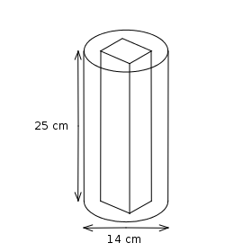

Question
The diagram shows a solid metal cylinder of diameter 14 cm and height 25 cm. A cuboid of metal with a square end of 6 cm wide and with 25 cm height is hollowed out (i.e. a hole in the shape of a square is formed) as shown. (Take π=22/7)

(a) Calculate the volume of the cylinder.
(b) Calculate the volume of remaining piece of metal after removing the cuboid
Solution
Part (a):
Radius of the cylinder = 14/2
= 7 cm
= 7 cm
Volume of the cylinder
= πr2h
= 22/7×7×7×25
= 3850 cm3
= πr2h
= 22/7×7×7×25
= 3850 cm3
Part (b):
Volume of the cuboid = 6×6×25
= 900 cm3
= 900 cm3
Volume of the remaining piece of metal
= Volume of cylinder − Volume of cuboid
= 3850 − 900
= 2950 cm3
= Volume of cylinder − Volume of cuboid
= 3850 − 900
= 2950 cm3